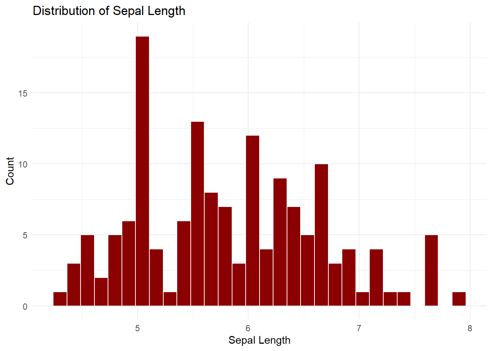
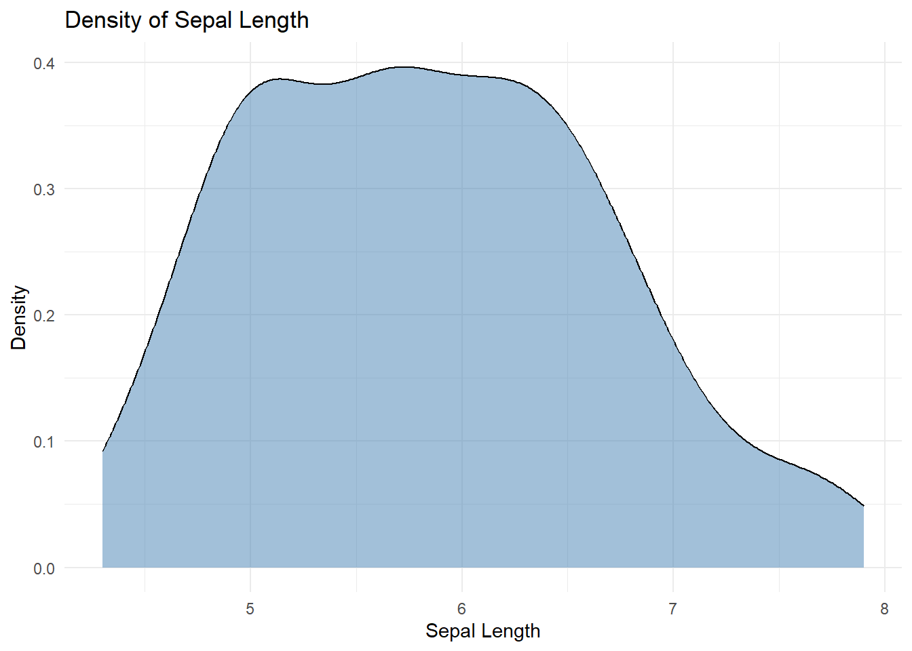
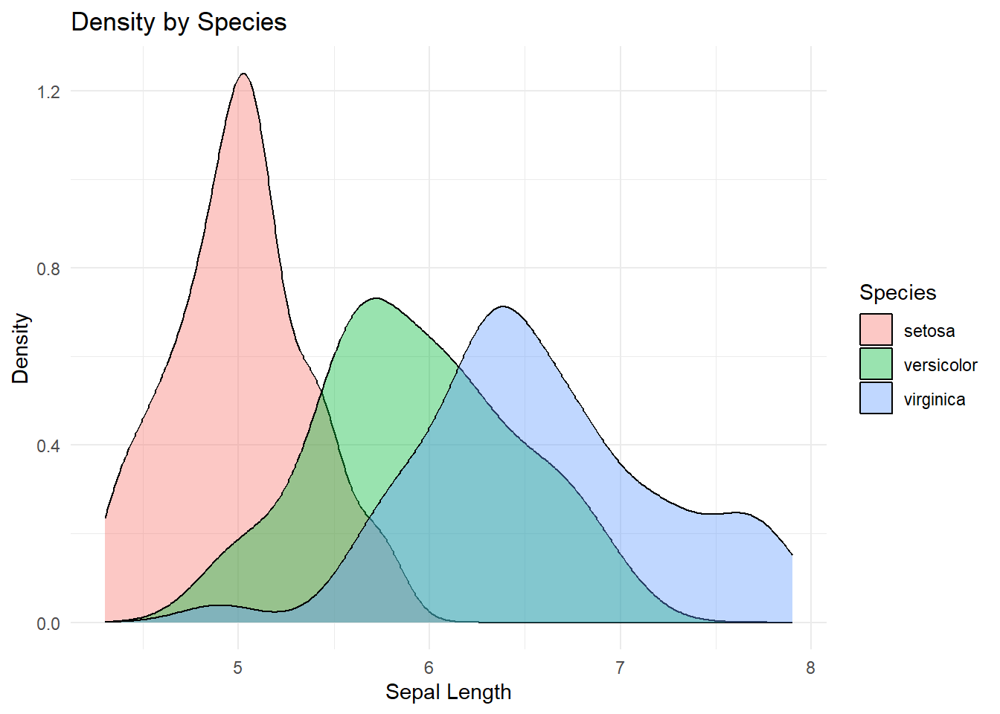
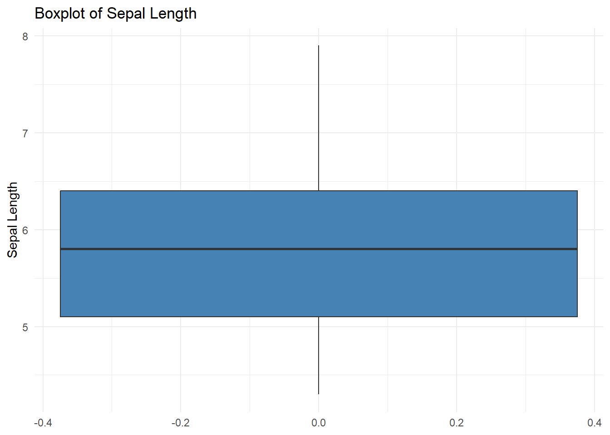
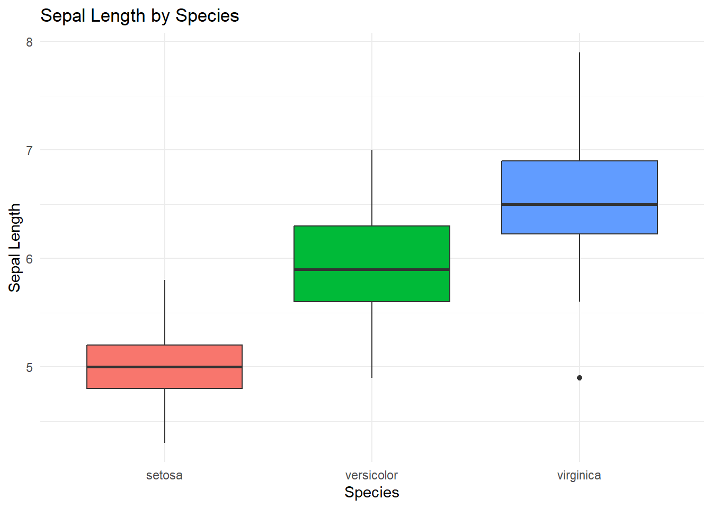
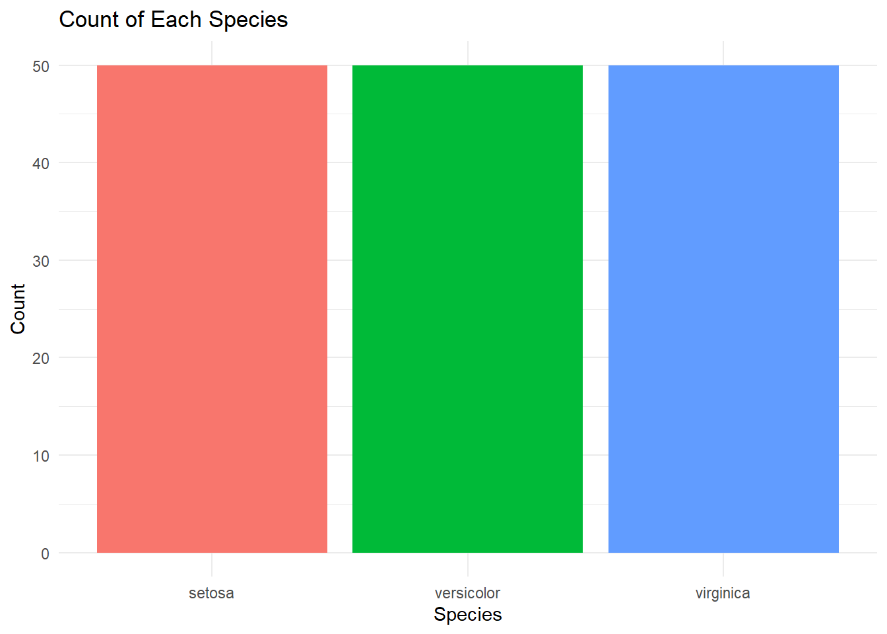
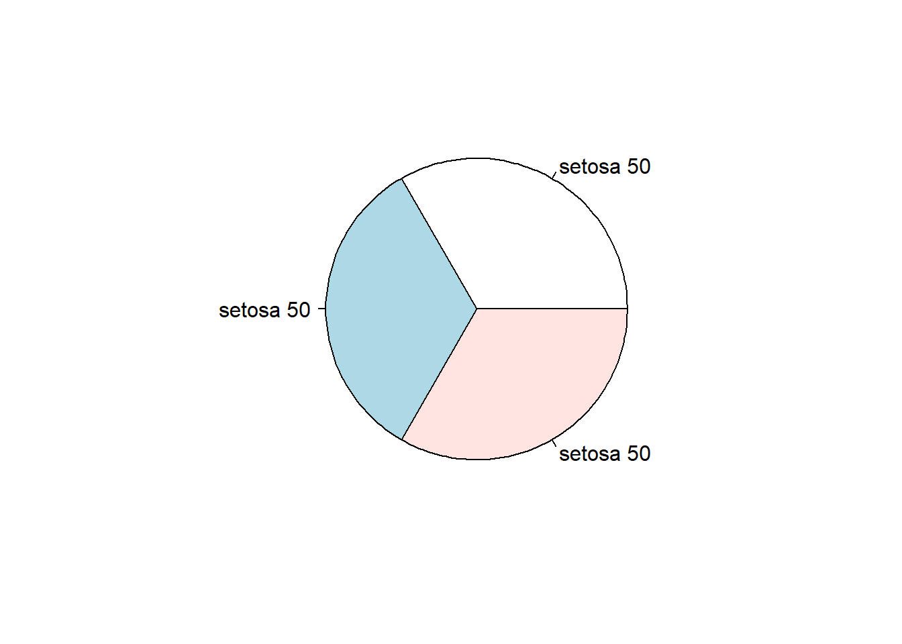
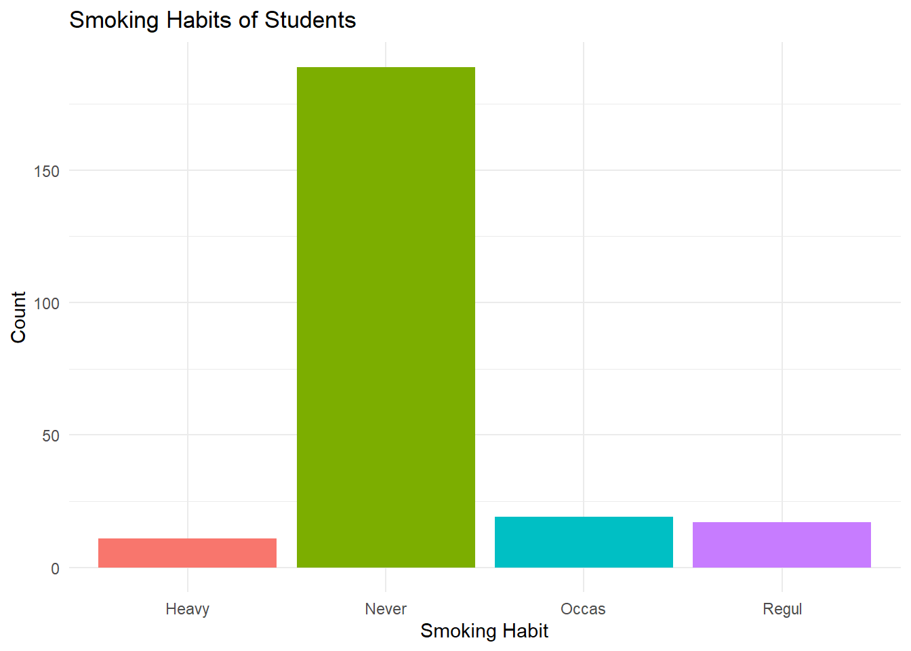

12 Single Variable Analysis
Before you start hunting for relationships between variables or building prediction models, you need to get to know each variable on its own. Think of it like the first week at a new job — before you figure out how departments interact, you need to understand what each one actually does. Single variable analysis (the fancy term is “univariate analysis”) is your get-to-know-you phase with the data.
This chapter covers analyzing one variable at a time using visualizations and statistical tests. We will look at numeric variables (histograms, density plots, box plots) and factor variables (bar charts, and yes, the dreaded pie chart). We will also dip into hypothesis testing — the statistical machinery that lets you say “I am 95% confident that…” in a meeting and actually mean it. For the full ggplot2 experience, see Chapters 10 and 11.
12.1 Numeric Variable
12.1.1 Histogram
A histogram is the first date you should go on with any numeric variable. It chops your data into bins and shows you how many observations land in each one, giving you a quick feel for the shape of the distribution. Are values clustered tightly around the center? Spread out all over the place? Piling up on one side? A histogram tells you all of this in one glance.
In business terms, this is how you would visualize the distribution of customer order values. If most orders cluster around $25-$50 with a long tail of $500+ orders, that tells a very different story than a nice bell curve centered at $100.
ggplot(iris, aes(x = Sepal.Length)) +
geom_histogram(bins = 30, fill = "darkred", color = "white") +
labs(x = "Sepal Length", y = "Count", title = "Distribution of Sepal Length") +
theme_minimal()
The distribution of Sepal.Length is roughly bell-shaped, centered around 5.5–6.0 cm, with a slight right skew. Most observations cluster between 4.5 and 7.0 cm, and there are no extreme outliers. In a business context, this kind of shape suggests a “typical” value that most observations hover around — like the average order size at a restaurant where most people spend about the same amount.
12.1.2 Density plot
If a histogram is a first date, a density plot is the second date — smoother, more refined, and you start to see the real shape underneath. Instead of chunky bars, you get a sleek continuous curve. Density plots are especially handy when you want to overlay multiple groups on the same chart without it looking like a bar chart had a nervous breakdown.
ggplot(iris, aes(x = Sepal.Length)) +
geom_density(fill = "steelblue", alpha = 0.5) +
labs(x = "Sepal Length", y = "Density", title = "Density of Sepal Length") +
theme_minimal()
We can also overlay density plots by group — and this is where they really earn their paycheck. Imagine comparing the distribution of deal sizes across your East, Central, and West sales regions, all on one clean chart:
ggplot(iris, aes(x = Sepal.Length, fill = Species)) +
geom_density(alpha = 0.4) +
labs(x = "Sepal Length", y = "Density", title = "Density by Species") +
theme_minimal()
The grouped density plot reveals that setosa has the narrowest spread and lowest center (around 5.0 cm), while virginica has the highest center (around 6.5 cm) with a wider spread. Versicolor sits in the middle. Notice how setosa barely overlaps with virginica — these two groups are quite distinct — while versicolor overlaps considerably with both. In a business context, if these were customer segments, you would feel confident treating setosa and virginica as genuinely different populations, but versicolor would require more nuance.
12.1.3 Box plot
The box plot is the executive summary of a distribution. In one compact visual, you get the median (the line in the middle of the box), the interquartile range (the box itself — where the middle 50% of your data lives), the whiskers (the range of “normal” values), and any outliers (the lonely dots hanging out by themselves like the person who shows up to the meeting 30 minutes early). It is the data visualization equivalent of a one-page brief: everything important, nothing extra.
ggplot(iris, aes(y = Sepal.Length)) +
geom_boxplot(fill = "steelblue") +
labs(y = "Sepal Length", title = "Boxplot of Sepal Length") +
theme_minimal()
Box plots really earn a promotion when you compare groups side by side. Want to see how customer satisfaction scores differ across your three product lines? How about employee engagement by department? This is your chart:
ggplot(iris, aes(x = Species, y = Sepal.Length, fill = Species)) +
geom_boxplot() +
labs(x = "Species", y = "Sepal Length", title = "Sepal Length by Species") +
theme_minimal() +
theme(legend.position = "none")
Comparing species, virginica has the highest median Sepal.Length (around 6.6 cm) and the widest IQR, meaning more variability. Setosa has the lowest median (around 5.0 cm) and a tight IQR, meaning these flowers are more consistent in size. Versicolor sits in between. There is one outlier in virginica on the low end. If these were sales territories, virginica would be your “high average but volatile” region, while setosa would be “steady and predictable.”
12.1.4 Test of Mean
Now we are moving from “looking at the data” to “making claims about the data” — and that is where hypothesis testing enters the chat. Visualizations are great for exploration, but when your VP asks “are you sure about that number?”, you need something more rigorous than “well, the histogram looked pretty good.”
A quick primer on hypothesis testing. The logic goes like this: you start with a null hypothesis (usually “nothing interesting is happening” — the mean equals some value, the two groups are the same, there is no relationship). Then you look at your data and ask: “If the null hypothesis were true, how likely is it that I would see data this extreme?” That likelihood is the p-value. A small p-value (typically below .05) means your data is very unlikely under the null hypothesis, so you reject the null and conclude something interesting is going on. A large p-value means your data is perfectly consistent with the null — you cannot rule it out.
Think of it like a courtroom. The null hypothesis is “innocent until proven guilty.” The p-value is the strength of the evidence against innocence. If the evidence is overwhelming (p < .05), you convict. If it is weak, the defendant walks.
mean(iris$Sepal.Length)
#> [1] 5.843333The mean Sepal.Length is about 5.84 cm. But is that meaningfully different from, say, 5.0? Or did we just happen to get a slightly high average in this particular sample? A one-sample t-test answers that question formally.
If we had to test whether the mean of Sepal.Length was either = or < or > a particular value, we could use a one-sample t-test. In the real world, this is how you would answer questions like “Is our average customer satisfaction score really above 4.0, or did we just get lucky with this particular sample?” It is the difference between a gut feeling and a defensible business claim.
There are three assumptions of a one-sample t-test.
- Random sampling from a defined population
- Interval or ratio scale of measurement
- Population is normally distributed
Here we test whether the mean is different from 5. The null hypothesis says “the true mean equals 5” and we are checking whether our data disagrees:
t.test(iris$Sepal.Length,mu=5) # Ho: mu=5
#>
#> One Sample t-test
#>
#> data: iris$Sepal.Length
#> t = 12.473, df = 149, p-value < 2.2e-16
#> alternative hypothesis: true mean is not equal to 5
#> 95 percent confidence interval:
#> 5.709732 5.976934
#> sample estimates:
#> mean of x
#> 5.843333How to read this output. The key pieces are:
- t = 13.627: This is the test statistic — it measures how far our sample mean (5.84) is from the hypothesized value (5.0), in units of standard error. The bigger the absolute value, the stronger the evidence against the null. A t-value of 13.6 is enormous.
- df = 149: Degrees of freedom, which is just the sample size minus 1 (150 - 1 = 149). This determines the shape of the distribution R uses to calculate the p-value.
- p-value < 2.2e-16: This is essentially zero. It means: if the true mean really were 5.0, the probability of getting a sample mean as extreme as 5.84 (or more extreme) is astronomically small. We reject the null hypothesis.
- 95 percent confidence interval: 5.71 to 5.98: We are 95% confident the true population mean falls somewhere in this range. Notice that 5.0 is nowhere near this interval — more evidence that the mean is not 5.
- sample estimate (mean of x = 5.843): This is simply the sample mean we computed earlier.
Bottom line: the mean Sepal.Length is statistically significantly different from 5.0. This is not a fluke.
Now let us get more specific. What if we want to test whether the mean is greater than 5, and we want to be 99% confident about it? That is a tougher bar to clear, but sometimes the stakes demand it:
t.test(iris$Sepal.Length,mu=5,alternative="greater",conf.level = .99) # Ho: mu=5
#>
#> One Sample t-test
#>
#> data: iris$Sepal.Length
#> t = 12.473, df = 149, p-value < 2.2e-16
#> alternative hypothesis: true mean is greater than 5
#> 99 percent confidence interval:
#> 5.684336 Inf
#> sample estimates:
#> mean of x
#> 5.843333Reading this output: The t-statistic and p-value are even more decisive here. With alternative = "greater", R tests a one-sided hypothesis (is the mean above 5?), which gives a smaller p-value than the two-sided test. The 99% confidence interval starts at 5.68 and goes to infinity — meaning we are 99% confident the true mean is at least 5.68, which is well above 5.
Interpretation: Since the p-value is less than .01, we have evidence to suggest that the mean of Sepal.Length is greater than 5. In business terms, if this were your average customer spend and 5 was your break-even target, you could confidently walk into the CFO’s office and say “we are clearing the bar.” That is the power of a hypothesis test — it turns “I think so” into “the data confirms it.”
12.2 Factor variable
12.2.1 Bar plot
For categorical variables — things like product categories, customer segments, regions, or department names — bar charts are your go-to visualization. They answer the beautifully simple question: “How many of each do we have?” Not fancy, but enormously useful. You would be amazed how many business decisions start with just counting things.
ggplot(iris, aes(x = Species, fill = Species)) +
geom_bar() +
labs(x = "Species", y = "Count", title = "Count of Each Species") +
theme_minimal() +
theme(legend.position = "none")
The bar chart shows all three species have exactly 50 observations each — a perfectly balanced dataset. In real-world business data, you almost never get this lucky. Usually one category dominates (like “Standard” customers vastly outnumbering “Premium” ones), and spotting that imbalance early is critical.
12.2.2 Pie Chart - FYI Do not use
We are legally obligated to show you how to make a pie chart, but we are also morally obligated to tell you not to use one. Pie charts are the cargo shorts of data visualization — technically functional, but everyone in the analytics world judges you for wearing them. The core problem is that human brains are terrible at comparing angles and areas. Quick: is a 23% slice meaningfully different from a 27% slice? In a pie chart, good luck. In a bar chart, it is obvious. That said, your boss will ask for a pie chart at some point (it is an immutable law of corporate life), so here is how to make one. Then gently suggest a bar chart instead.

The pie chart shows three equal slices (50 each). Looks fine here because all three slices are identical — but imagine one slice was 23% and another 27%. Could you tell the difference? Probably not. A bar chart would make that gap obvious instantly. That is why pie charts are problematic for anything beyond two or three very different-sized categories.
12.2.3 One factor-variable Chi-square goodness-of-fit test
Do not let the scary name fool you — this test answers a very practical question: “Does what I actually see match what I expected to see?” This comes up constantly in business. You expected your customer base to be 70% retail and 30% wholesale — does the data back that up? Your marketing team claimed the email campaign would produce a certain distribution of responses — time to check the receipts.
To illustrate this, let us use the survey dataset (from an R package named MASS). The data and their description have been provided in the folder for datasets.
Names of variables:
load("data/survey.Rda")
names(survey)
#> [1] "Sex" "Wr.Hnd" "NW.Hnd" "W.Hnd" "Fold" "Pulse" "Clap" "Exer"
#> [9] "Smoke" "Height" "M.I" "Age"Structure of the dataframe
str(survey)
#> 'data.frame': 237 obs. of 12 variables:
#> $ Sex : Factor w/ 2 levels "Female","Male": 1 2 2 2 2 1 2 1 2 2 ...
#> $ Wr.Hnd: num 18.5 19.5 18 18.8 20 18 17.7 17 20 18.5 ...
#> $ NW.Hnd: num 18 20.5 13.3 18.9 20 17.7 17.7 17.3 19.5 18.5 ...
#> $ W.Hnd : Factor w/ 2 levels "Left","Right": 2 1 2 2 2 2 2 2 2 2 ...
#> $ Fold : Factor w/ 3 levels "L on R","Neither",..: 3 3 1 3 2 1 1 3 3 3 ...
#> $ Pulse : int 92 104 87 NA 35 64 83 74 72 90 ...
#> $ Clap : Factor w/ 3 levels "Left","Neither",..: 1 1 2 2 3 3 3 3 3 3 ...
#> $ Exer : Factor w/ 3 levels "Freq","None",..: 3 2 2 2 3 3 1 1 3 3 ...
#> $ Smoke : Factor w/ 4 levels "Heavy","Never",..: 2 4 3 2 2 2 2 2 2 2 ...
#> $ Height: num 173 178 NA 160 165 ...
#> $ M.I : Factor w/ 2 levels "Imperial","Metric": 2 1 NA 2 2 1 1 2 2 2 ...
#> $ Age : num 18.2 17.6 16.9 20.3 23.7 ...Let us look at the smoking habits of students, stored in the Smoke variable. Think of this as a customer behavior survey — “how frequently do customers use our premium features?” with categories like “Never,” “Occasionally,” “Regularly,” and “Heavy.”
ggplot(survey %>% filter(!is.na(Smoke)), aes(x = Smoke, fill = Smoke)) +
geom_bar() +
labs(x = "Smoking Habit", y = "Count", title = "Smoking Habits of Students") +
theme_minimal() +
theme(legend.position = "none")
The bar chart immediately reveals that the vast majority of students are non-smokers (“Never”), with relatively few in the other categories. This kind of heavily skewed distribution is extremely common in behavioral data — most customers never use a feature, a small group uses it occasionally, and an even smaller group uses it heavily.
Now suppose we wanted to test whether the observed distribution matches our expectation that 70% of students were non-smokers and the remaining 30% were equally split among the other three groups (10% each). In a business setting, this is like testing whether your actual customer demographics match the target profile your marketing campaign was designed around.
Null: The observed frequency distribution fits well with the expected frequency distribution. (In plain English: “Reality matches our assumptions.”) Alternate: The observed frequency distribution does not fit well with the expected frequency distribution. (In plain English: “Our assumptions were wrong and we need to rethink things.”)
The standard assumptions are: (1) each observation is independent, (2) the sample is drawn from the population of interest, and (3) expected frequencies are not too small (a common rule of thumb is that each expected cell count should be at least 5).
How many observations are present in each of the four levels of the Smoke variable? This is our observed frequency distribution — what actually happened out in the real world:
obsfreq <- survey %>% filter(!is.na(Smoke)) %>% pull(Smoke) %>% table()
obsfreq
#> .
#> Heavy Never Occas Regul
#> 11 189 19 17Observed frequency distribution (in proportions):
prop.table(obsfreq)
#> .
#> Heavy Never Occas Regul
#> 0.04661017 0.80084746 0.08050847 0.07203390Expected frequency distribution (in proportions) — what we thought would happen when we were being optimistic in the conference room:
expprop=c(.1,.7,.1,.1)Chi-square test of goodness of fit test — the moment of truth:
chisq.test(obsfreq,p=expprop)
#>
#> Chi-squared test for given probabilities
#>
#> data: obsfreq
#> X-squared = 12.898, df = 3, p-value = 0.004862How to read this output:
- X-squared = 20.48: This is the chi-square test statistic. It measures how far the observed counts are from the expected counts, summed across all categories. The bigger this number, the worse the fit between observed and expected. A value of 20.48 is quite large.
- df = 3: Degrees of freedom, which equals the number of categories minus 1 (4 - 1 = 3). This tells R which chi-square distribution to use for the p-value.
- p-value = 0.000136: The probability of seeing a chi-square value this large (or larger) if the expected distribution were actually correct. This is very small — way below .01.
Interpretation: Since the p-value is less than .01, we find evidence to suggest that the two distributions are different. Our assumption about the proportions does not hold up to scrutiny. The actual breakdown of smoking habits is significantly different from the 70/10/10/10 split we hypothesized. If this were a business scenario, it would mean your assumed customer segments do not match reality — which is valuable information, even if it is not what you wanted to hear.
12.3 One factor variable - t-test one sample proportion
Sometimes instead of testing a whole distribution, you just want to test a single proportion. “Is the share of customers who prefer online checkout really 30%?” “Do more than half of our users open our emails?” That is what the one-sample proportion test is for — it is simple, focused, and incredibly practical.
summary(survey$M.I)
#> Imperial Metric NA's
#> 68 141 28The summary() output shows us how many students chose Imperial vs. Metric, plus how many have missing values (NA’s). This gives us the raw material for the proportion test.
Let us suppose we were testing a hypothesis that the proportion of students who would indicate their responses in the Imperial units (feet/inches, in contrast to the metric units - centimeters/meters) would be something other than 30%. We find that there are 68 of them who provide a response in that unit. Do we have evidence in favor of the hypothesis that there would be a value different from 30%?
binom.test(table(survey$M.I),p=.3)
#>
#> Exact binomial test
#>
#> data: table(survey$M.I)
#> number of successes = 68, number of trials = 209, p-value = 0.4504
#> alternative hypothesis: true probability of success is not equal to 0.3
#> 95 percent confidence interval:
#> 0.2623404 0.3934153
#> sample estimates:
#> probability of success
#> 0.3253589How to read this output:
- number of successes = 68: The count of students who chose Imperial.
- number of trials = 209: The total number of students who answered (excluding NAs).
- p-value = 0.3729: The probability of observing 68 out of 209 (or something even more extreme) if the true proportion really were 30%. A p-value of 0.37 is large — we cannot reject the null.
- 95 percent confidence interval: 0.264 to 0.391: We are 95% confident the true proportion falls in this range. Notice that 0.30 is inside this interval, which is consistent with the large p-value. If 0.30 were outside the interval, we would reject the null.
- sample estimate (probability of success = 0.325): The observed proportion — 68/209 = 32.5%.
Conclusion: We do not have evidence that the proportion is different from .3. The p-value is too large to reject the null, and the confidence interval contains .30. In business terms, if you claimed “more than 30% of our customers prefer in-store pickup,” this result would tap you on the shoulder and say “not so fast — your data does not back that up.”
What if we were testing the hypothesis that the proportion will be greater than .3?
binom.test(table(survey$M.I),p=.3,alternative = "greater")
#>
#> Exact binomial test
#>
#> data: table(survey$M.I)
#> number of successes = 68, number of trials = 209, p-value = 0.2329
#> alternative hypothesis: true probability of success is greater than 0.3
#> 95 percent confidence interval:
#> 0.2717783 1.0000000
#> sample estimates:
#> probability of success
#> 0.3253589Yet again, we do not have any evidence that the proportion is greater than .3. The observed proportion is .325, which looks bigger, but it is not “statistically significant.” And this, friends, is one of the most important lessons in business analytics: just because a number is slightly above your target does not mean it is meaningfully above your target. Sample variation is real, and statistical tests are what keep us from making confident-sounding decisions based on noise.